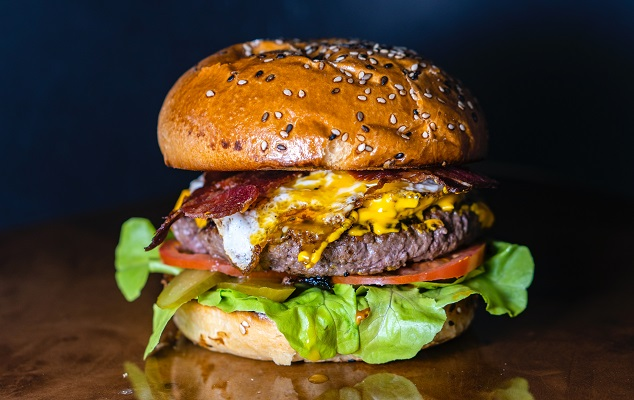

Merhaba arkadaşlar, bugün sizlere biraz oradan biraz buradan aldığım, karıştırarak kendi tarifimi oluşturduğum ve yıllardır afiyetle yaparak yediğim hamburger tarifimi anlatacağım.
Tarif: Cem Can
Merhaba arkadaşlar, bugün sizlere biraz oradan biraz buradan aldığım, karıştırarak kendi tarifimi oluşturduğum ve yıllardır afiyetle yaparak yediğim hamburger tarifimi anlatacağım.
Tarif: Cem Can
|  | Kaç Kişilik : 2 Kişilik | Hazırlama Süresi : 15 Dakika | Pişirme Süresi : 25 Dakika |
Hamburger Köftesi Malzemeleri:
|
|||
Hamburger Yanına Konacak Malzemeleri:
|
|||
Hazırlanışı:Kıymayı, yumurtayı, ekmek için, tuz, karabiber ve pekmezi derin bir kabın içinde karıştırıyoruz. Çok sert birşekilde olmadan yavaş yavaş yoğuracağız. Ardından 2 parça köfteyi ekmek boyutuna göre ayarlıyoruz. Köfte piştikten sonra hamburger ekmeğinin içine önce marul sonra turşu üstüne hamburger köftesi üstüne de peynir gelecek şekilde koyuyoruz. Hamburgerimiz hazır. |
|||
| Afiyet olsun. | |||